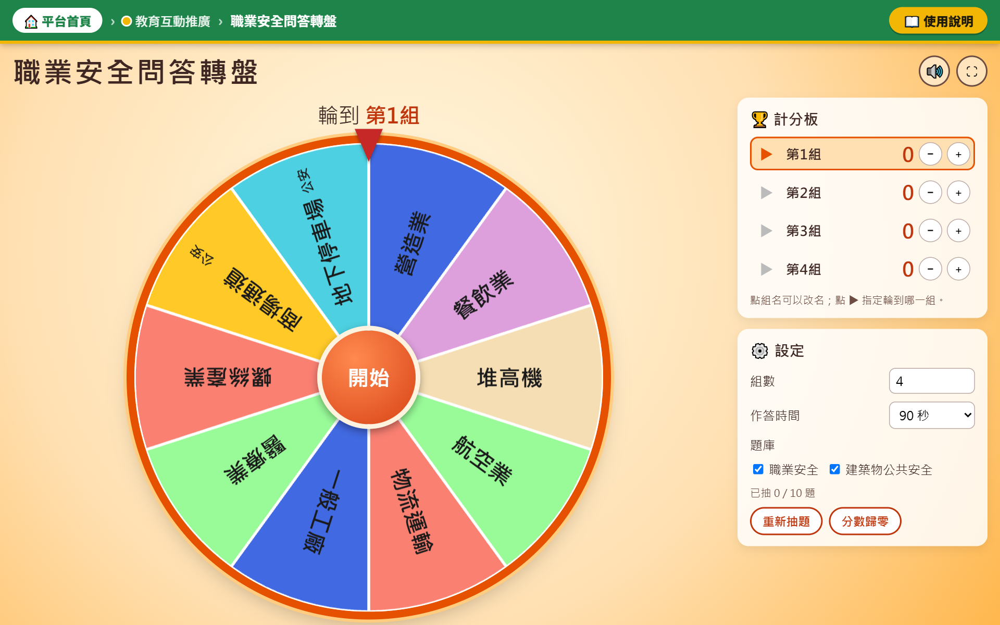
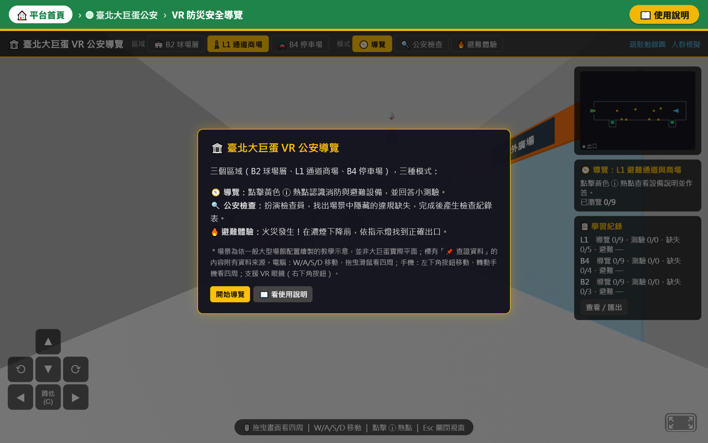
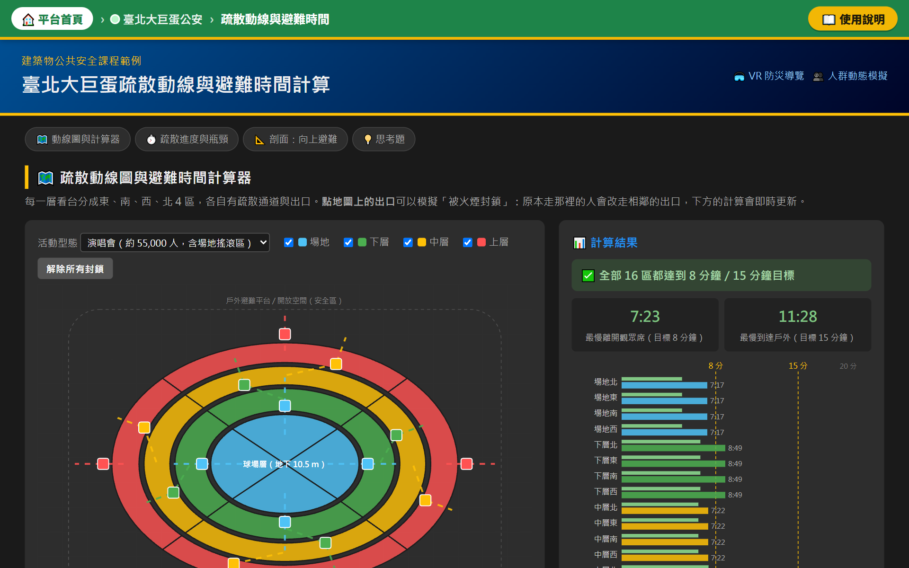
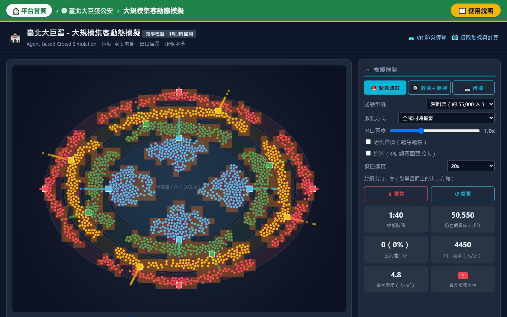
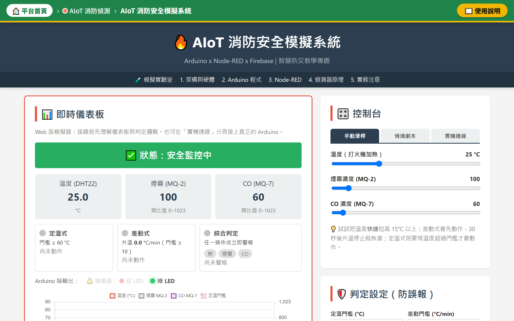
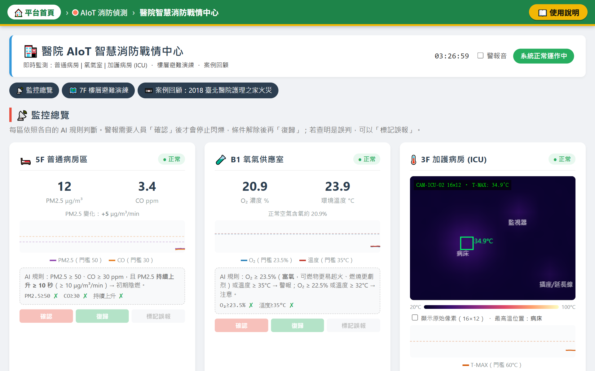
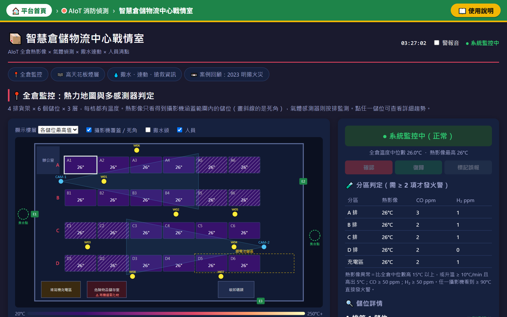

為什麼要做這個平台
🎓 招生推廣的需求
7 人環境與職業安全衛生科
五專三年級班級人數
五專三年級班級人數
國三學生對消防與環安專業的印象，多停留在「救火」與「工地安全帽」；簡章與簡報難以呈現科系實際所學。
🔥 公共安全的課題
- 2018 臺北醫院護理之家火災：臥床病人的水平避難
- 2023 屏東明揚火災：倉儲偵測與搶救資訊
- 大巨蛋等數萬人場館：群眾疏散與推擠風險
🎯 平台的目標
- 主要目標：在國三社團與多元課程中推廣兩科，提升就讀意願
- 作為五專一至三年級的專業入門教材
- 以遊戲化與模擬，把法規與設備知識變成可操作的體驗
平台架構：三層學習路線
認知層危害辨識

職業安全問答轉盤・看圖找危害8 個行業職安＋2 題建築物公共安全；分組轉盤、限時圈選、自動判定計分，逐一揭曉答案與法規楊采蓁
🎡 轉盤抽題→⏱️ 限時圈出危害→💡 揭曉答案與法規
以分組競賽暖身，讓學生先從生活與職場中的危害開始，再進入大型場館與 AIoT 的情境。題庫可由教師自行增修。
▼ 由生活與職場危害，進入大型場館情境
場域層避難與疏散

大巨蛋 360° VR 防災導覽球場、商場、停車場三場景：設備導覽、公安檢查、濃煙中找出口婁凱軒

疏散動線與避難時間封鎖出口、調整寬度，找出疏散瓶頸；剖面圖說明向上避難林暐傑

大規模集客動態模擬55,000 人疏散、散場、進場；比較同時撤離與分區分批廣播林暐傑
▼ 由「人如何逃生」，進入「如何及早發現火災」
智慧層AIoT 偵測

AIoT 消防安全模擬系統定溫、差動、煙霧／CO 偵測比較，調整判定挑戰零誤報；可接實體 Arduino邱浤誠

醫院智慧消防戰情中心病房、氧氣室、ICU 熱影像監測；依 R.A.C.E. 演練水平避難林沅熹

智慧倉儲物流中心戰情室全倉熱力圖、兩項異常才發警報；撒水連動、人員清點、搶救資訊卡林沅熹
模擬驗證：學生在平台上能看到什麼
分區分批廣播：時間不變，推擠大減
演唱會 55,000 人緊急疏散；長條為危險擁擠（LOS F，> 5.38 人/m²）累計秒數，右側為全員到戶外時間（⚠ 超過 15 分鐘目標）；各情境 5 次平均
分批廣播的到戶外時間與同時撤離相近（11.0 vs 11.2 分），危險擁擠由 279 秒降至 16 秒；恐慌推擠則讓疏散更慢、更危險。
火警判定：靈敏度與誤報的取捨
5 種情境（3 種火災、2 種非火災）× 每種設定 5 次；所有設定皆無漏報
誤報次數（10 次非火災中）
火災平均警報時間（秒）
改為「至少兩項交叉確認」後，誤報由 10 次降為 0 次，代價是警報平均延後約 28 秒。
📋 教學實測規劃
使用平台約 90 分鐘，前後以手機填寫 14 題前後測與 12 題五點量表；以配對 t 檢定／Wilcoxon 檢定分析，並比較三組對象的進步幅度。實測結果將於決賽發表。
國三社團／多元課程→ 體驗：數分鐘完成一項活動，認識科系與職涯
五專一至三年級→ 深化：調整參數、分析瓶頸與誤報，銜接專業課程
✨ 平台特色
- 純網頁、免安裝：電腦、手機、VR 眼鏡皆可開啟
- 每個模擬附圖解使用說明，國中生也能自行上手
- 首頁規劃上課順序，由淺入深
- 附 Arduino、Node-RED 教材，可接實體感測器
- 內建線上問卷與統計，教學成效可追蹤
📱 掃描立即體驗
平台首頁七個模擬一次看
VR 防災導覽手機即可體驗